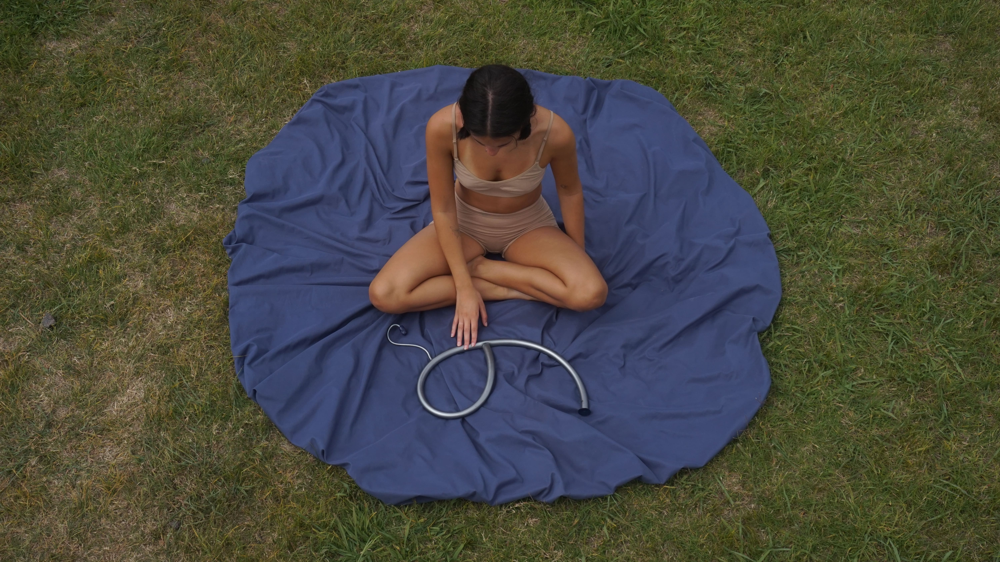
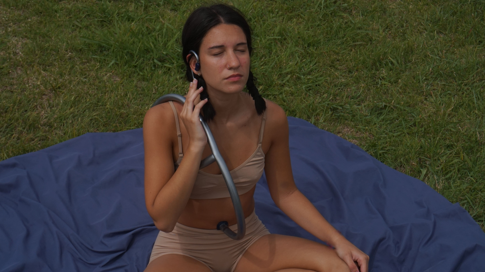
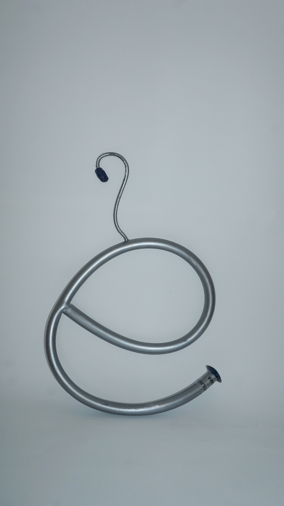
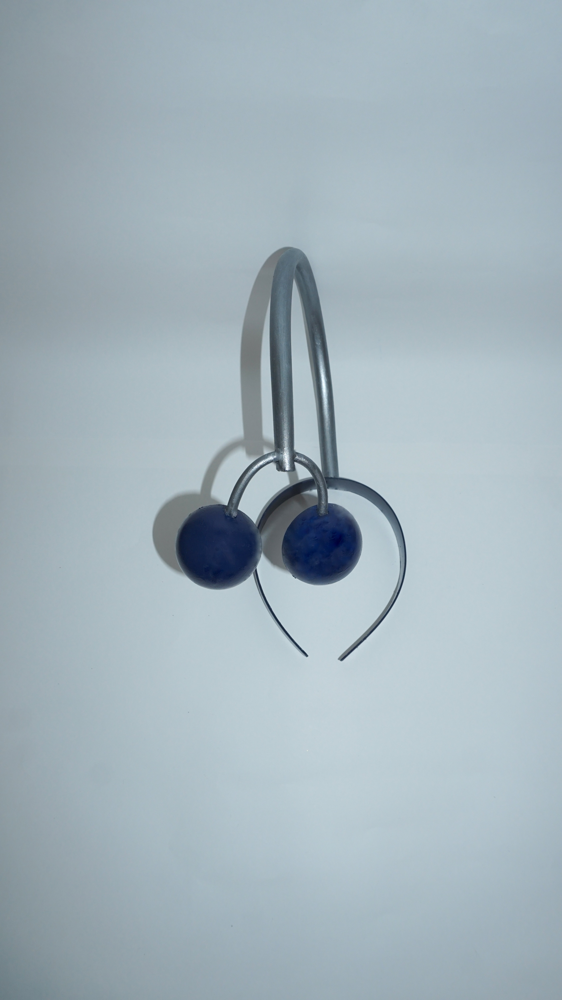
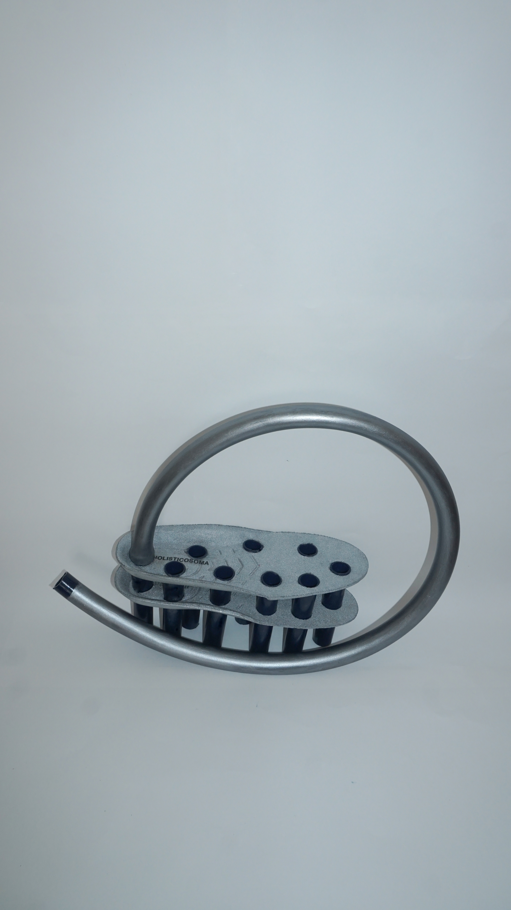
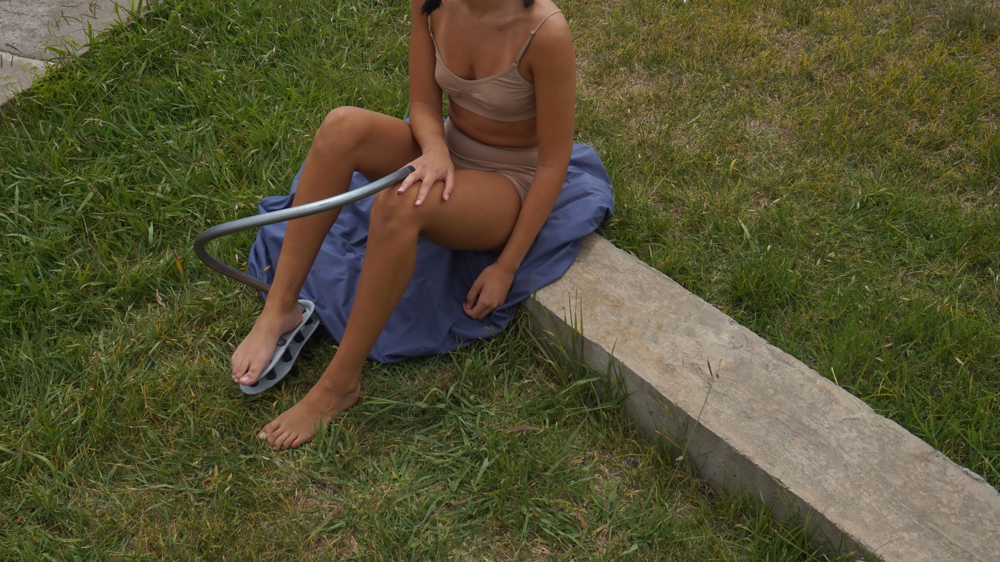

Cosmética del futuro


En base a la macrotendencia, se realizó un sistema de productos que encarna esta visión holística a
través de dispositivos diseñados para fomentar la conexión interna:
TRI-ANIMA

TRI-OPTIC

TRI-CORPO


Fluidez Interrumpida
La tendencia "Fluidez interrumpida" es un manifiesto de diseño que busca romper con las convenciones
estáticas, inspirándose en los principios estéticos y conceptuales de la obra de la arquitecta Zaha
Hadid. Esta propuesta no se limita a la forma, sino que se centra en la transferencia de conceptos
clave de la arquitectura deconstructivista (como el dinamismo, la fluidez, la organicidad y la
ruptura de lo convencional) hacia el ámbito del diseño de productos gastronómicos. Sus estructuras,
conocidas por desafiar la gravedad y las líneas rectas, se convierten aquí en el lenguaje formal
para la creación de una bebida y una golosina.